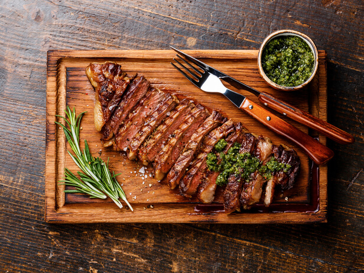
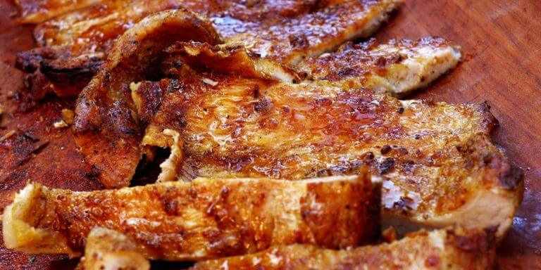
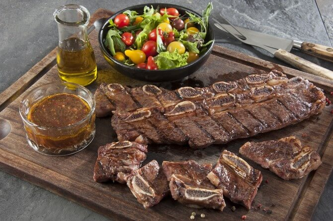
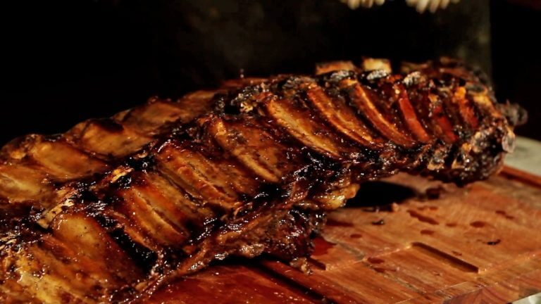

Cómo hacer asado: trucos para asar bien y errores a evitar
15 de noviembre, 2021 Posted by Carmen
En Argentina el asado del domingo se ha convertido en un ritual que reúne alrededor de la mesa a la familia y los amigos. Y entre ellos nunca falta quien que se jacta de ser el mejor asador del mundo. Es que, en materia de carnes a la parrilla, los argentinos no sólo nos jugamos el desafío de hacer una buena comida, sino la obligación de estar a la altura del reinado nacional sobre las brasas. Para ganarte los laureles, desde El gran chef te vamos a contar cómo hacer asado, cuáles son los trucos para asar bien y cuáles son los pecados capitales que un buen asador jamás debe cometer.
En esta ocasión te contamos acerca de los 10 platos tradicionales de la cocina italiana, en una recopilación apta para todos los gustos y que te dará buenas ideas a la hora de cocinar.

Todo buen asado empieza en la carnicería, pero… ¿Qué carne es mejor para asado a la parrilla? Juan Carlos, chef con larga trayectoria en el arte parrillero explica que “debe ser bien rosada y contar con buena calidad de grasa, siempre blanca, porque si es amarilla es de animal viejo”. Por eso lo ideal buscar un proveedor en el que uno confíe ciegamente.
Cómo se hace un buen asado: paso a paso
1 SALAR LA CARNE
Una vez que tenemos los trozos que vamos a asar, Petersen sugiere salarlos solamente al principio, antes de ponerlos al fuego. Sal fina para piezas chicas y salmuera que es mezcla de sal y agua para piezas grandes.
2 PRENDER EL FUEGO
Hacer un buen fuego es uno de los factores claves. Por eso es importante conseguir buena leña. El quebracho colorado, que se consigue mucho, es difícil de trabajar, tarda mucho en hacerse brasas. Y lo mejor es distanciarse del carbón a la hora de asar. Es mucho mejor para un asado la madera de algarrobo o el quebracho blanco. Cuando se hayan formado las brasas, sin largar humo, y tengan un polvillo o ceniza de color blanco o gris, ya están listas para poner extendidas debajo de la carne.
3 PREPARAR LA PARRILLA
Es fundamental limpiar bien la parrilla antes de poner la carne. Si queda sucia de un asado anterior, la grasa se queda pegada a los hierros y contamina el sabor del nuevo asado. Para limpiarla es necesario que la parrilla esté bien caliente. Luego hay que tirarle agua y remover la suciedad con un cepillo de cerda dura.
4 TIEMPOS DE COCCION
Uno de los más grandes secretos de los asadores es ir cocinando la carne a fuego lento. Uno se da cuenta cuando el fuego es lento si al poner la mano cerca de la parrilla, es capaz de contar hasta diez sin empezar a quemarse. Hay que saber esperar para darle el punto justo a cada carne. El asado no se apura y cada corte tiene su tiempo.
5 EN QUE ORDEN SERVIR LA CARNE
A la hora de servir hay que ir retirando de la parrilla los diferentes cortes en un orden determinado. Primero retirás las achuras, riñones, chorizos y morcillas que fueron las primeras piezas que pusiste sobre la parrilla. Después servís las tiras de asado o los otros cortes con hueso y por último el resto de la carne, como vacío o tapas de nalga o asado.

Qué carne es buena para hacer un asado
Si todavía no te iniciaste en el arte de asar carne, los expertos recomiendan empezar con los cortes más fáciles, que son los más finos: el matambre, la entraña o las achuras como el chorizo y la morcilla. Estos son los mejores porque no hay que esperar tanto tiempo, las cocciones son rápidas y no hay necesidad de tanto fuego. Quizás en 40 minutos ya tenés un asado listo.
A medida que vayas acumulando “horas de asador” podés pasar a cortes un poco más difíciles, como el costillar, el vacío o una bondiola de cerdo. Y recién después, cuando te sientas seguro, podés ir probando otros cortes y, especialmente, otras formas de cocción a fuego como cocinar al disco.
Es que, como decíamos antes, cada corte tiene su tiempo y el asado debe hacerse con paciencia. Si queremos resolverlo más rápido, es preferible elegir cortes finos como asado banderita, entraña, bife de costilla, matambre a la parrilla, que se hacen vuelta y vuelta. Si no, con la posibilidad de una parrilla más grande, se puede optar por vacío, lomo entero o costillas.

Qué ingredientes puede llevar un asado
Si bien cuando hablamos de asado nos referimos fundamentalmente a la carne que va a la parrilla, en torno a ella existe una buena dosis de aderezos y acompañamientos que hacen del almuerzo un momento ideal para disfrutar de todos los placeres de la gastronomía.
ADEREZOS Y SALSAS
Una carne asada la podés preparar solo con sal y a la parrilla queda deliciosa. Pero si querés redoblar la apuesta podés preparar unas ricas salsas y aderezos que maridan perfecto con las carnes asadas, porque el vinagre o limón que contienen barre la grasa en el paladar y le da un frescor las carnes o achuras. Las más populares y deliciosas son el chimichurri y salsa criolla.
PROVOLETTA A LA PARRILLA
Otro gran aliado de un buen asado a la parrilla es la provoleta, que puede hacerse sola, con orégano o verduras encima. Siempre queda rica, sobre todo sobre las brasas. También admite rellenos varios.
Errores a evitar para ser un buen asador
Hay errores que pueden arruinar la carne a la parrilla, y eso en nuestro país es un sacrilegio. Te contamos cuáles son, según los expertos, los “pecados” que pueden arruinar un almuerzo con la familia o una cena con amigos.
1 ENCENDER FUEGO CON ALCOHOL
No es una buena idea encender el fuego con alcohol, y no solo por cuestiones de seguridad, sino porque es un acelerante que luego hará que las brasas duren menos y necesitamos tener brasas durante el tiempo que dure la cocción de la carne, que como dijimos debe hacerse lentamente.

2 PONER LA CARNE DIRECTO DE LA HELADERA A LA PARRILLA
Salvo que quieras que la carne te quede dura, no la pongas en la parrilla directamente de la heladera. Lo conveniente es dejar que la carne cobre temperatura ambiente durante unas horas antes de cocinarla. Tené en cuenta que el calor de las brasas ya se encargará de eliminar cualquier atisbo de vida bacteriana que haya podido revivir en ese período de tiempo.
3 DAR VUELTA LA CARNE CON EL TENEDOR
Pinchar la carne con el tenedor de la parrilla para darla vuelta es un clásico error de principiante. Lo último que queremos es que la carne pierda su jugo, y si la pinchamos es exactamente lo que ocurrirá, aunque sea gota a gota. Para evitarlo, usá unas pinzas.
COMENTARIOS
Registrate para recibir toda la información y las ultimas noticias de El gran chef en en tu correo electronico, como asi tambien ofertas y descuentos exclusivos en materiales y cursos por ser parte de esta comunidad ! no te lo pierdas ¡
-
Elena Guanco
Bunas recetas para salir de lo comun con la cocina italiana y darle una vuelta.
Juliana Venegas
17 de febrero del 2021-3:24 pm
Hermosas recetas para hacer en casa disfrutar con la familia.